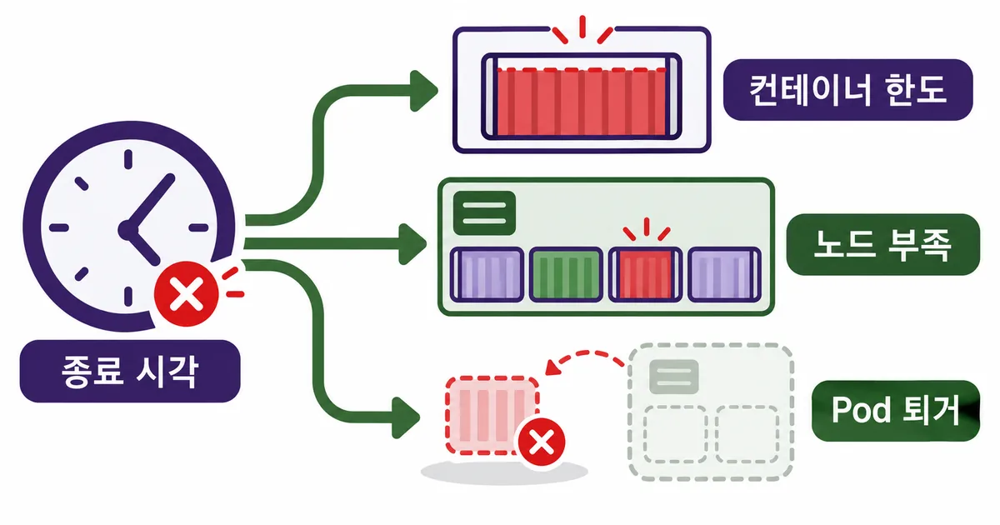
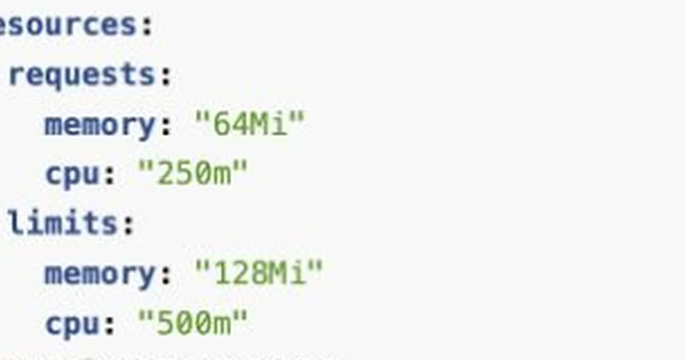
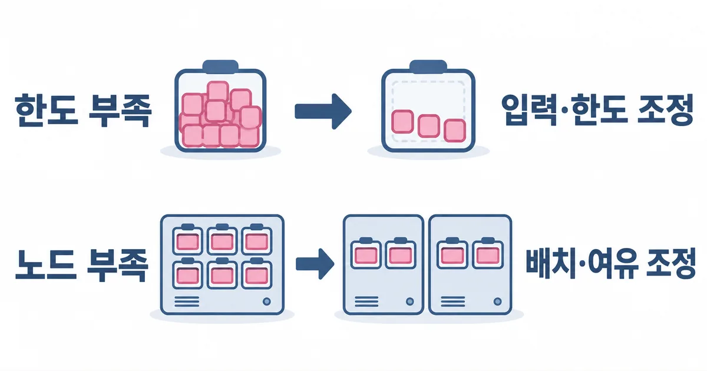

Pod가 재시작했는데 지금 메모리 그래프는 낮다. OOMKilled 해결을 위해 limit부터 두 배로 올리면 될까? 먼저 컨테이너 한도 초과와 노드 전체 메모리 부족을 나누고, Evicted 상태도 따로 확인해야 한다. Kubernetes가 10월 6일 정리한 cgroup v2 설명도 이 경계를 없애지 않는다. 종료 시각의 근거를 묶으면 한도를 늘릴지, 배치를 바꿀지 판단할 수 있다.
개발 가이드
30초 요약
- OOMKilled 해결은 컨테이너 한도 초과와 노드 전체 메모리 부족을 먼저 구분하고, Evicted 상태도 따로 확인하는 데서 시작한다. 원인이 다르면 limit 증설의 효과도 달라진다.
- 종료 시각·컨테이너 설정·노드 기록을 모아 원인별 판단표에서 수정할 계층을 고른다.
- 현재 사용량이나 누적 OOM 계수 하나로 원인을 확정하지 않고 작은 변경을 같은 입력으로 검증한다.
먼저 알아둘 말
- OOMKilled
- 메모리 부족 처리로 컨테이너가 종료됐음을 나타내는 종료 사유다.
- request·limit
- 배치 때 고려하는 자원량과 실행 중 적용하는 자원 상한이다.
- Evicted
- 노드 자원 압박 등에 대응해 kubelet이 Pod를 퇴거한 상태다.
- cgroup
- Linux 커널이 프로세스를 묶어 자원을 관리하는 경계다.
실전 가이드 · Kubernetes Blog · 2026. 10. 6
Kubernetes cgroup v2 설명으로 확인하는 메모리 종료의 경계
최근 cgroup v2 공식 설명을 단서로 컨테이너 한도·노드 OOM·Pod 퇴거를 나누고, 증설과 배치 조정의 판단 기준을 문서 비교로 정리한다.
재시작 전에 남아 있던 종료 기록부터 본다
OOMKilled는 메모리 부족에 따른 종료를 가리키는 단서다. 컨테이너가 자기 한도에 걸렸는지, 노드 전체가 부족해 커널이 희생 프로세스를 골랐는지는 별도 근거가 필요하다. Pod 상태가 Evicted라면 kubelet이 자원을 회수한 퇴거 경로도 확인한다.
현재 Running 상태만 보면 재시작 전 원인이 가려진다. 먼저 문제 컨테이너의 Last State, Reason, 종료 시각과 Restart Count를 본다. 로그 수집기가 있다면 같은 시각의 기록을 함께 보존하고, Pod를 삭제하기 전에 이름과 식별자도 남긴다.
- 종료된 컨테이너 이름·이전 종료 사유·종료 시각과 Pod 이벤트를 먼저 보존한다.
- 같은 시각의 노드 메모리 압박·커널 OOM 기록과 다른 Pod의 종료를 대조한다.
- 실제 적용된 memory request·limit과 메모리 사용 추이를 비교한다.
- 한도 부족·노드 부족·퇴거 중 근거가 맞는 경로를 골라 소수 복제본에서 변경한다.
아래는 기존 Pod를 조회하는 명령 예시다. 기본 네임스페이스 default, Pod 이름 my-pod, 컨테이너 app은 자기 환경으로 바꾼다. 실제 클러스터에서 실행한 결과는 아니며, 노드 조회와 로그 읽기 권한은 운영 담당자와 확인한다.
kubectl describe pod my-pod -n default
kubectl logs my-pod -n default -c app --previous
kubectl get pod my-pod -n default -o yaml
# describe에 나온 노드 이름으로 바꾼다
kubectl describe node my-node여러 컨테이너가 있는 Pod는 이름별로 분리해 본다. 앱 컨테이너는 정상이어도 로그 수집용 컨테이너가 종료됐을 수 있다. --previous는 이전 인스턴스 로그를 요청하지만 로그가 이미 없거나 수집 전에 삭제됐다면 당시 상황을 복원하지 못한다.

request는 배치 기준이고 limit은 실행 경계다
Kubernetes의 memory request는 스케줄러가 배치할 때 고려하는 양이고, limit은 실행 중 커널이 적용하는 상한이다. request를 넘었다고 즉시 종료되는 것은 아니다. 반대로 노드에 여유가 보여도 해당 컨테이너의 한도가 작으면 종료될 수 있다.
설정 저장소의 YAML보다 실제 Pod에 반영된 값을 먼저 본다. 기본값을 넣는 정책이나 배포 템플릿 때문에 생각한 값과 달라질 수 있다. Pod 수준 리소스 예산을 사용하는 환경은 컨테이너 값과 상위 예산도 함께 확인한다.
메모리 단위도 확인한다. 512Mi와 512M은 서로 다른 크기이며, 소문자 m은 메모리에서 밀리바이트를 뜻한다. CPU의 500m 표기를 메모리에 복사하면 의도와 전혀 달라진다. 값 자체와 적용 위치를 확인한 뒤 증설 여부를 정한다.
가상의 배치 작업을 생각해 보자. 노드에는 여유가 있는데 큰 파일을 한 번에 읽는 특정 컨테이너만 한도 근처에서 종료된다면, 파일을 나눠 처리하거나 작업 공간을 늘리는 가설이 맞을 수 있다. 이 사례는 실제 관찰이 아니며 적정 MiB 값을 제안하지 않는다.

설정의 역할을 구분한 뒤 종료 범위를 찾아야 한다. request와 limit이 모두 있다는 사실만으로 노드 전체 부족이 배제되지는 않는다.
세 경로가 비슷해 보여도 고칠 대상은 다르다
노드 메모리 압박을 뜻하는 MemoryPressure와 Pod 이벤트, 커널 OOM 기록을 종료 시각에 맞춰 본다. 한 노드의 여러 Pod가 함께 영향을 받았다면 노드 부족 가설을 우선 확인한다. 다만 현재 MemoryPressure가 False라고 과거의 순간 부족까지 없었다고 볼 수는 없다.
노드 전체 메모리가 급격히 늘면 kubelet의 퇴거 판단보다 커널 OOM 처리가 먼저 일어날 수 있다. 그래서 컨테이너의 OOMKilled 기록과 노드 기록을 함께 봐야 한다. Evicted는 메모리 외에 디스크 공간 같은 다른 자원 압박에서도 생길 수 있으므로 메시지의 자원명을 읽는다.
두 기록을 같은 시각으로 묶어야 컨테이너 한도 조정과 노드 배치 조정 중 무엇을 먼저 할지 판단할 수 있다. 종료 사유만으로 한도 초과를 확정하지 않는다.
종료 시각의 노드·커널 기록을 확보하지 못했다면 원인은 미확정이다. OOMKilled 이름이나 현재 메모리 그래프 하나로 컨테이너 한도 초과와 노드 전체 부족을 확정할 수 없다.
증설을 선택하기 전에 이 표로 분기를 고른다
다음 표는 공식 리소스 관리·퇴거 문서와 커널 제어 규칙을 하나의 판단 순서로 묶은 것이다. 근거가 여러 경로에 동시에 걸리면 하나만 고르지 말고 한도와 노드 부족을 함께 검증한다. 표의 증상은 가능성을 좁히는 단서이며 단독 확진 기준이 아니다.
| 근거가 가리키는 범위 | 먼저 검토할 변경 | 되돌리거나 멈출 조건 |
|---|---|---|
| 컨테이너 한도에 걸린 기록 | 피크 입력·동시 작업을 줄이거나 필요한 한도 조정 | 사용량이 계속 증가하거나 노드 여유 감소 |
| 노드 OOM·여러 Pod 동시 영향 | 배치 밀도·request·시스템 예약·노드 용량 검토 | 새 Pod가 배치되지 않거나 이웃 작업 악화 |
| Evicted와 자원 압박 메시지 | 메시지에 나온 메모리·디스크 등 해당 자원 정리 | 원래 업무 데이터 손실 우려 또는 원인 불일치 |
한도 증설이 필요한 경우에도 사용량이 안정되는지 먼저 관찰한다. 동일 입력에서 실행할수록 계속 증가하면 누수나 무제한 캐시를 의심할 근거가 된다. 증설은 종료를 늦출 수 있지만 계속 증가하는 원인을 없애지는 않는다.
노드 부족에서는 한도를 높이면 더 많이 쓸 여지만 늘 수 있다. request가 평소 사용량에 비해 지나치게 낮으면 배치가 몰릴 수 있으므로 실제 사용량과 함께 검토한다. request를 높인 뒤 Pending이 생기면 새 배치가 가능한 노드 여유부터 확인한다.
시스템 예약과 Allocatable은 운영자가 함께 볼 항목이다. 물리 메모리 전부를 앱에 배정하면 kubelet과 런타임이 쓸 공간이 줄어든다. 예약을 즉석에서 과하게 강제하는 것도 시스템 프로세스를 위협할 수 있으므로 기존 설정과 측정 근거를 보존한 뒤 조정한다.

cgroup v2의 계수도 종료 시각과 함께 읽는다
10월 6일 공식 글은 cgroup v2의 OOM 처리와 진단 도구를 설명했다. cgroup은 커널이 프로세스 묶음의 자원을 관리하는 경계다. 이 글에서는 Linux 노드를 대상으로 하며 Windows 노드에 아래 파일 이름을 그대로 적용하지 않는다.
커널 문서에서 memory.current는 현재 사용량, memory.max는 상한이다. memory.high는 회수 압박과 속도 제한을 거는 경계로, 그 경계 초과 자체가 OOM 종료를 일으키는 것은 아니다. high와 max를 같은 의미의 숫자로 읽으면 느려짐과 종료를 혼동한다.
memory.events의 oom_kill은 이 cgroup에 속한 프로세스가 OOM 처리로 종료된 횟수다. 노드 전체 OOM도 포함할 수 있으므로 증가했다는 사실만으로 자기 한도 초과를 확정하지 않는다. max·oom의 변화와 노드 기록, 실제 적용 상한을 함께 읽는다.
계수는 누적 값이고 memory.events에는 하위 그룹 사건이 포함될 수 있다. 해당 그룹만 보려면 memory.events.local도 확인한다. 컨테이너가 재생성되면 경로와 계수가 바뀔 수 있으므로 장애 전후 같은 그룹인지 확인하지 않은 단순 비교는 피한다.
- 노드·Pod·컨테이너 식별자와 시각을 계수 샘플에 함께 기록한다.
- 현재 사용량만으로 종료 직전 피크를 추정하지 않는다.
- 관리형 환경에서 커널 로그가 보이지 않으면 운영자 관측 기록을 요청하고 원인을 미확정으로 남긴다.
컨테이너 전체 프로세스를 함께 종료하는 OOM 설정은 일부 자식 프로세스만 죽은 상태를 줄이는 데 관여한다. 이것이 Pod 전체의 메모리를 늘리거나 OOM을 없애는 기능은 아니다. 진단 중 노드의 cgroup 파일을 임의로 쓰지 말고 실제 런타임과 설정을 확인한다.
다시 살아난 뒤에도 같은 입력으로 확인한다
설정을 바꿔 Pod가 Running이 됐다는 사실만으로 해결을 판정하지 않는다. 종료됐던 큰 파일, 동시 요청, 배치 크기 같은 입력 조건을 검증 환경에서 다시 맞춰 본다. 이전보다 입력을 줄였으면 그 차이를 결과에 함께 남긴다.
관찰 구간은 임의의 5분으로 고정하지 않는다. 적어도 문제를 만들었던 처리 단계와 반복 주기를 포함해야 한다. 재시작 횟수, 메모리 사용 추이, 노드 여유, 이웃 Pod 영향과 처리 결과를 비교하고 부하·버전·설정 차이를 기록한다.
실험은 소수 복제본에 먼저 적용한다. 새 배치 실패나 이웃 작업 지연, 노드 압박이 나타나면 이전 설정으로 되돌리고 가설을 재검토한다. 재시작으로 진행 중 데이터가 사라질 수 있는 작업은 복구 가능한 상태와 재처리 절차를 확보한 뒤 시험한다.
이 글은 공개 문서 비교이며 실제 클러스터 OOM 재현, 처리 속도, 비용 또는 적정 한도를 측정하지 않았다. 설정 변경 효과는 사용 중인 Kubernetes·런타임·커널 버전과 입력에 따라 확인해야 한다. 메모리 그래프가 낮다는 이유로 장애 근거를 삭제하지 않는 것이 첫 재발 방지책이다.
참고한 자료
메모리 문제의 해결 단위는 오류 이름 하나가 아니라 종료된 컨테이너, 당시의 노드, 실행 입력이다. 한도 부족이라면 필요한 작업 공간을 확보하고, 노드 부족이라면 동시 사용량과 배치부터 조정한다. 퇴거였다면 그때 부족했던 자원을 따로 확인한다. 기록이 빠졌을 때는 증설을 정답으로 확정하지 말고 관찰 가능한 작은 변경으로 가설을 좁히자. 같은 입력 조건에서 재시작·퇴거가 다시 발생하지 않고 메모리 추이와 노드 여유가 안정적이며 변경 전후 기록이 남았다면 해결 여부를 판단할 수 있다.